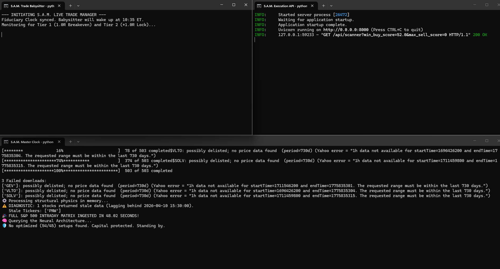
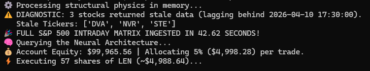
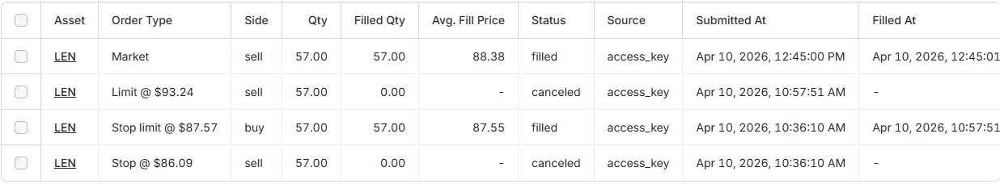

A custom Pandas-based quantitative trading engine. S.A.M. wipes out market noise by processing daily OHLCV data through rigid structural physics, machine learning, and strict fiduciary risk parameters.
// Routine Scan: 503 Tickers Ingested. No Setups Found.

// Execution: Target Found. Allocating 5% Equity ($4,998) to $LEN.

// Brokerage API: Bracket Order & EOD Flush Confirmation

> Initializer: Buy Stop Limit @ $87.57
> Defense: Sell Stop @ $86.09
> Target: Sell Limit @ $93.24
> EOD Safety: Market Sell flush executed at 12:45 PM MST (3:45 PM EST).
A high-speed ingestion pipeline building a local SQLite market database. Dynamically scrapes Wikipedia to maintain the S&P 500 directory.
Rigid structural filters prevent the AI from trading garbage setups.
S.A.M. does not trade blindly on candlestick patterns. It grades them using an XGBoost Classifier optimized via GridSearchCV. Validated against a strict out-of-sample cutoff (Jan 1, 2025) to prevent overfitting.
A RESTful FastAPI Control Center acts as an automated fiduciary. It dynamically checks live equity to calculate position sizes, risking exactly 5% of account capital per trade via Alpaca.
The defensive core. Operates on a high-speed 5-second loop during market hours.
EOD Liquidation: A nuclear switch runs daily at 15:45 ET, flattening all open positions to secure overnight capital.
Bracket Flushing: Continuously clears unfilled traps to free buying power.